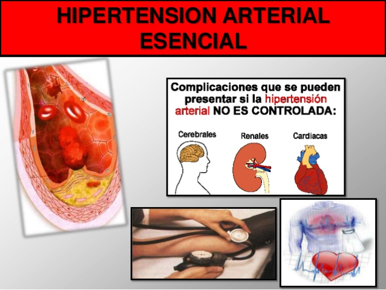
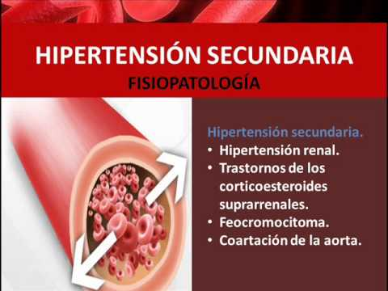

| NOMBRE | DESCRIPCIÓN | IMAGEN |
|---|---|---|
| HIPERTENSIÓN ARTERIAL ESENCIAL | Se denomina hipertensión esencial o hipertensión primaria a la presión arterial alta (más de 140/90 mmHg) sin una causa reconocible. La presión arterial está determinada por la fuerza que ejerce la sangre contra las paredes de las arterias y la cantidad de sangre que bombea el corazón. fuente:https://ada.com/es/conditions/essential-hypertension |  |
| HIPERTENSIÓN ARTERIAL SECUNDARIA | Es la presión arterial alta provocada por otra enfermedad. La hipertensión secundaria puede ser causada por enfermedades que afectan los riñones, las arterias, el corazón o el sistema endocrino. Fuente:https://www.mayoclinic.org/es-es/diseases-conditions/secondary-hypertension/symptoms |  |